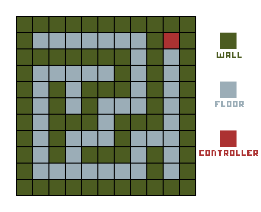

Searching: Here the program uses recursion to look for a number in an array. If checks each value each time decreasing its size and changing the value to check.
Reverse Integers: Here the program prints the last value each time the method is called and removes it before calling the next.
